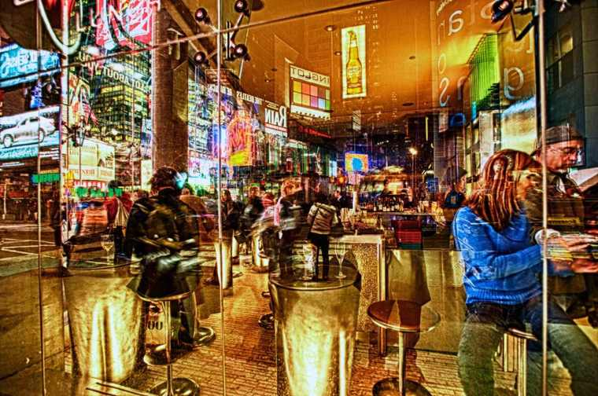
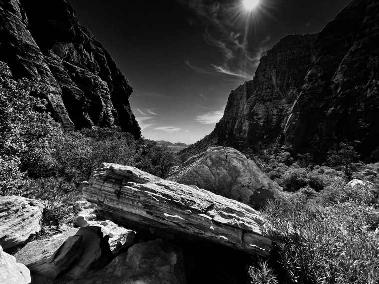
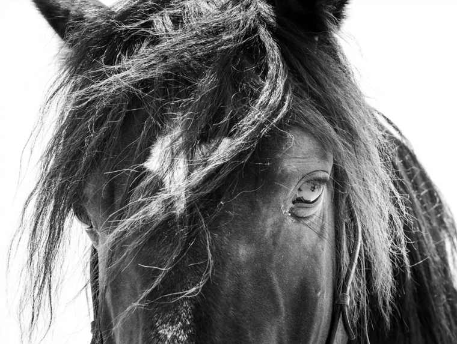
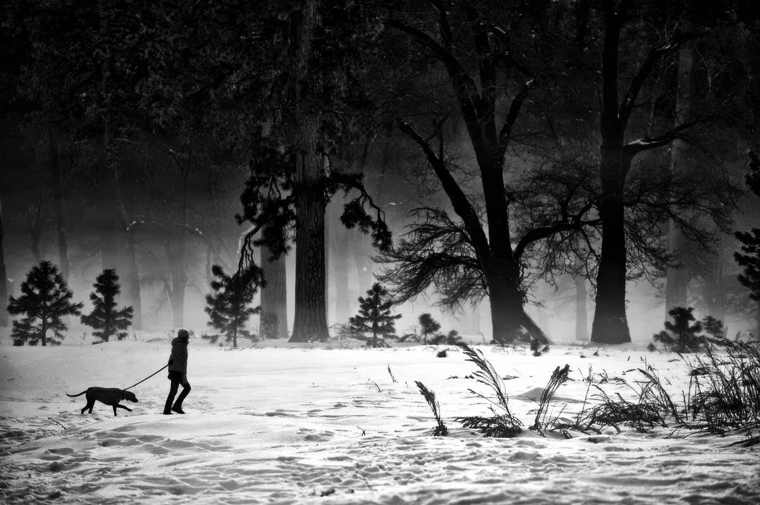

OTHER SELECTED WORKS / 02
Looking closer.
A collection of moments, places, and encounters. Photography as another way of paying attention to the world and the people in it.




Return to the main portfolio to explore film, directing, acting, and speaking.